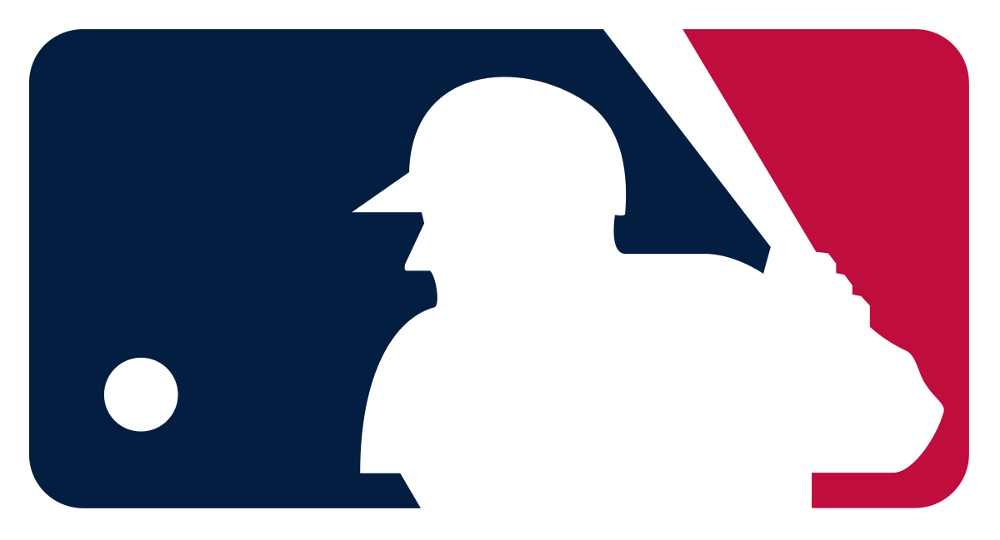

your title here
Home
All Time Players
All Time Home Runs
All Time Hits
All Time Strikeouts
All Time Saves
All Time Managerial Wins
MLB Top 10s

ABOUT
This website will be dedicated to conducting various top 10 lists all about some MLB statistics. These top 10 lists will consist of the following:
- My personal list of the top 10 players of all time
- Top 10 all time home run leaders
- Top 10 all time hits leaders
- Top 10 all time strikeout leaders
- Top 10 all time ERA leaders
- Top 10 all time winningest managers